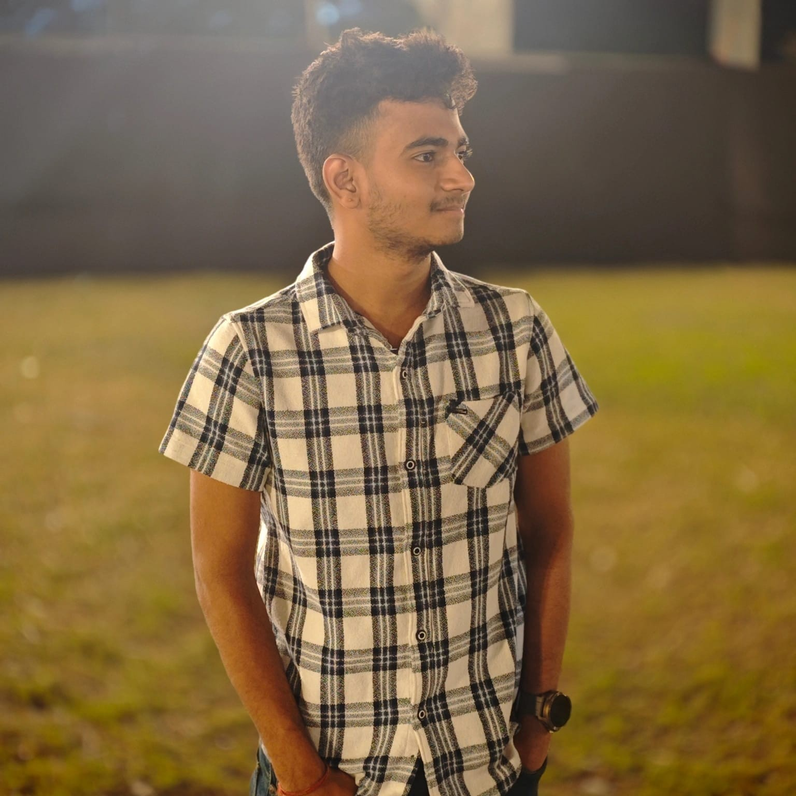

AI · GenAI01
ChefMate AI
An interactive AI cooking assistant that uses user preferences to generate personalized recipe suggestions and structured practical responses.
View details →PythonStreamlitGenerative AI
I’m Varshil Soni, a BCA student exploring Artificial Intelligence, Machine Learning, Generative AI and data-driven systems — turning ideas into useful prototypes.

My focus sits between AI concepts and practical applications: understanding a problem, prototyping a solution, and learning from the results.
I’m currently pursuing a BCA in Artificial Intelligence & Data Analytics at SDJ International College, Surat. My academic exposure includes AI, machine learning, statistics, data analytics, programming and data structures. Outside coursework, I build AI-oriented projects and experiment with modern developer tools.
Click a skill to highlight it. The toolkit spans programming, analytics, machine learning, GenAI and application development.
Click any project to open a quick research-style overview.
An interactive AI cooking assistant that uses user preferences to generate personalized recipe suggestions and structured practical responses.
View details →A travel application concept for itinerary generation, tourist discovery, budgets and booking-oriented workflows, with an emphasis on interactive UX.
View details →An AI-driven project concept for analysing shipment and demand information and identifying potential delivery risks for operational planning.
View details →An AI concept that analyses conflicting interests, compares resolution strategies and presents structured information for decision support.
View details →SDJ International College, Surat
Third Year · Semester 5 · Current CGPA 7.98/10 · Expected graduation April 2027.
Artificial Intelligence · Machine Learning · Generative AI · Data Analytics · Conversational Systems · Data-driven Decision Support.
I’m open to conversations around AI, data analytics, research internships and interesting technical projects.